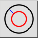
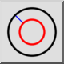
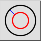
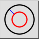

Концентричен (с разстояние)
Лентата с инструменти / Икона:
 

Меню: Начертайте > Кръг > Концентричен (с разстояние)
Кратък път: C, C
Команди: circleconcentric | cc
Това е автоматичен превод.
Лентата с инструменти / Икона:
 

Меню: Начертайте > Кръг > Концентричен (с разстояние)
Кратък път: C, C
Команди: circleconcentric | cc
С този инструмент можете да създадете една или няколко концентрични окръжности с дадено разстояние до съществуваща окръжност.